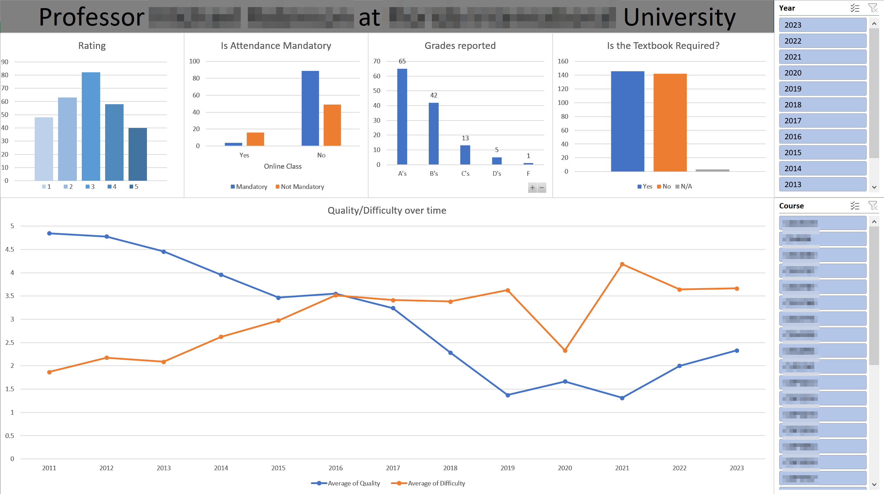

Rate My Professors web scraper
Last updated: 05/17/23
Introduction
This project was my first start at web scraping. The website ratemyprofessors is very helpful for college and university students because it provides insights on the quality and difficulty of the courses they will be taking. Although I won't be having much use for this anymore because I am going to be graduating in the summer, I thought this would be a fun project to work on to learn web scraping which can be a useful tool to have.
This was my first introduction to BeautifulSoup and Selenium. I started by watching an Amazon web scraping tutorial that teaches how to see price changes over time for a certain product. However, the video I watched was outdated and the methods that it used didn't work for me. I looked around to find a different method to make it work and after finishing the tutorial I used a different website to make it more personal for me.
from selenium import webdriver
from selenium.webdriver import ActionChains
from selenium.webdriver.common.by import By
from selenium.common.exceptions import NoSuchElementException
from selenium.webdriver.chrome.options import Options
import requests
import time
from datetime import datetime
import csvCommon practice in coding is to import modules at the top of the code to use them later. Modules are tools that others have made that can be used in your code to use their functionality without having to create it from scratch.
URL= '#' #professors link here
chrome_options = Options()
chrome_options.toggle_argument('--headless')
driver = webdriver.Chrome(options=chrome_options)
driver.get(URL)
try: #closes popups
driver.find_element(By.XPATH, "//div[starts-with(@class, 'FullPageModal__')]//button").click()
driver.find_element(By.XPATH, "//a[@id='bx-close-inside-1177612']").click()
except:
pass
#loads all the reviews
while(True):
try:
loadmore = driver.find_element(By.XPATH, "//div[@class= 'react-tabs__tab-panel react-tabs__tab-panel--selected']/button[@class='Buttons__Button-sc-19xdot-1 PaginationButton__StyledPaginationButton-txi1dr-1 eUNaBX']")
driver.execute_script("arguments[0].scrollIntoView();",loadmore)
ActionChains(driver)\
.scroll_by_amount(0, -100)\
.perform()
time.sleep(1)
loadmore.click()
time.sleep(1)
#once the button no longer exists, grabs the html and puts it in pagesource
except NoSuchElementException:
print("Reached bottom of page")
pagesource = driver.page_source
driver.close()
breakThe first thing we are going to do is open the URL for the professor we want to get the reviews for and try to close the popups that ratemyprofessors shows letting us know that it is using our cookies. The while statement repeats the code underneath it. In there we are loading all of the reviews by pressing the load more button found at the bottom of the page. When that is done, the HTML of the webpage is saved to the variable pagesource.
HTML is all of the code that tells the browser what to display on the page. We collect this information because it contains the review data. In the HTML code we are going to be looking for information on the professor and the information that students have left in their review.
#Parses the HTML with BeautifulSoup to better search through it
Soup1 = BeautifulSoup(pagesource, "html.parser")
Soup2 = BeautifulSoup(Soup1.prettify(),"html.parser")This code block above is used to convert the HTML into a BeautifulSoup object and the prettify() argument makes it easier to navigate and extract information from the html.
#gets professors name
title = Soup2.title.string
title = title.strip()
title = title.split(' ')
professor = ''
for i in title:
if i == "at":
break
professor += i + " "
professor = professor.strip()
print(professor)
#Retrieves professors stats
feedback_numbers = Soup2.find_all('div',{'class': 'FeedbackItem__FeedbackNumber-uof32n-1 kkESWs'})
rating = Soup2.find('div',{'class': 'RatingValue__Numerator-qw8sqy-2 liyUjw'}).get_text().strip()
takeAgain = feedback_numbers[0].text.strip()[:2]
Difficulty= feedback_numbers[1].text.strip()
scrapedate = datetime.today()
scrapedate = scrapedate.strftime("%Y-%m-%d")This code block retrieves the professors name from the title of the webpage, and retrieves the stats for the professor: their overall rating, difficulty, the percentage of people that would take this professor again and the date when the data was collected
#creates the CSV for professor reviews with the following header
header = ['professor','TakeAgain%','Difficulty','Rating','Date','','course', 'Review Date', 'Quality',
'Difficulty', 'For Credit', 'Attendance', 'Would Take Again', 'Grade', 'Textbook', 'Online Class', 'Comment']
with open(f'C:/Directory here/{professor}Reviews.csv','w',newline='',encoding='UTF8') as f:
writer = csv.writer(f)
writer.writerow(header)This is the first use of the CSV module used to create a CSV with the appropriate headers at the given directory.
#function to convert date for Excel to read it properly
def convert_date(date_string):
# Remove the 'th', 'rd', or 'st' from the day
day = date_string.split(' ')[1][:-3]
# Get the month abbreviation from the input string
month_abbr = date_string.split(' ')[0][:3]
# Get the year from the input string
year = date_string.split(' ')[2]
# Combine the day, month, and year into a string
date_str = f"{month_abbr}-{day}-{year}"
# Convert the string to a datetime object and then back to a string in the desired format
date_obj = datetime.strptime(date_str, '%b-%d-%Y')
date_obj = dateThis function is used to change the date format scraped from ratemyprofessors. The date on the website abbreviates the month and uses ordinal numbers for the dates (Jan 1st, 2023) and on Excel it doesn't recognize this format as a date. To fix that, we use this function to convert it into a fully numerical month-day-year format so that Excel recognizes it.
#retrieves review data for exporting into csv file
reviews = Soup2.find_all('div',{'class': 'Rating__StyledRating-sc-1rhvpxz-1 jcIQzP'})
counter = 0
#reads review data, removes unnecessary tags, exports to CSV
for i in range(len(reviews)):
#replaces previous value with NULL incase of no response in review
review_for_credit = 'NULL'
review_attendance = 'NULL'
review_takeAgain = 'NULL'
review_grade = 'NULL'
review_textbook = 'NULL'
review_online = 'NULL'
review_comment = 'NULL'
reviews_process = reviews[i].get_text().strip()
reviews_process = reviews_process.split('\n')
new_list = [item for item in reviews_process if item.strip() != '' and
item.strip() not in ['😎','😖','😐','awesome','awful','average',':',
'Participation matters','Group projects','GROUP PROJECTS','PROJECTS','CARES ABOUT STUDENTS',
'So many papers','Amazing lectures','Caring','Inspirational','Respected',
'Clear grading criteria','Hilarious',"Skip class? You won't pass.",'Gives good feedback',
'Graded by few things','GRADED BY FEW THINGS','Accessible outside class',
'EXTRA CREDIT', 'Online Savvy', 'LECTURE HEAVY','ACCESSIBLE OUTSIDE CLASS', 'Test heavy',
'Get ready to read','Would take again','TEST HEAVY','Participation matters',
'LOTS OF HOMEWORK','Lots of homework','Tough grader','Tough Grader',
'Lecture heavy','BEWARE OF POP QUIZZES','Reviewed'] and
'Reviewed: ' not in item.strip() and item.strip().isdigit() == False ]
for i,j in enumerate(new_list):
new_list[i] = j.strip()
#removes repeated course and date values in list
new_list = [item for i, item in enumerate(new_list) if not (i == 6) and not (i == 7)]
#goes through list and gives values to variables
for i,j in enumerate(new_list):
course = new_list[0]
review_date = new_list[1]
review_quality = new_list[3]
review_difficulty = new_list[5]
if 'For Credit' in j:
review_for_credit = new_list[i+1]
if 'Attendance' in j:
review_attendance = new_list[i+1]
if 'Would Take Again' in j:
review_takeAgain = new_list[i+1]
if 'Grade' in j:
review_grade = new_list[i+1]
if 'Textbook' in j:
review_textbook = new_list[i+1]
if 'Online Class' in j:
review_online = new_list[i+1]
review_comment = new_list[i]
#ignores cases where coursename was not written properly
if len(course) > 9:
continue
fixed_date = review_date
fixed_date = convert_date(fixed_date)
review_dict = {'professor':professor,'takeAgain%':takeAgain,'Total Difficulty':Difficulty,
'Total Rating':rating,'Scrape Date':scrapedate,'blank':' ','course': course,
'review_date': fixed_date,'review_quality': review_quality,'review_difficulty':review_difficulty,
'review_for_credit':review_for_credit, 'review_attendance':review_attendance,
'review_takeAgain':review_takeAgain, 'review_grade':review_grade, 'review_textbook':review_textbook,
'review_online': review_online,'review_comment':review_comment}
#only prints professors overall stats on the first row
if counter == 1:
review_dict = {'professor':'','takeAgain%':'','Total Difficulty':'','Total Rating':'',
'Scrape Date':'','blank':' ','course': course, 'review_date': fixed_date,'review_quality': review_quality,
'review_difficulty':review_difficulty, 'review_for_credit':review_for_credit,
'review_attendance':review_attendance, 'review_takeAgain':review_takeAgain, 'review_grade':review_grade,
'review_textbook':review_textbook, 'review_online': review_online,'review_comment':review_comment}
#appends data to
data = review_dict.values()
with open(f'C:/directory_here/{professor}Reviews.csv','a+', newline='', encoding='UTF8') as f:
writer = csv.writer(f)
writer.writerow(data)
counter = 1The code's final portion begins by identifying and collecting all reviews into a single variable named reviews.
To avoid carrying over the previous review's variable values during the for loop, each variable is set to null. This is necesary because some reviews may not fill in every variable.
The reviews_process variable is initialized to the first review found that contains all the necessary information. We then convert the information into a list of variables and then refine it to a new_list removing unnecessary items such as emojis, tags, and repeated course and date values.
Next we itierate over each review and assign its information to the corresponding variable. The for loop checks if the value is in the information we have, assigning it to the corresponding variable.
For dates, we pass them through the convert_date function that was defined earlier to ensure they are properly formatted for reading on Excel.
All of the variables we have collected are then placed in the review_dict, which is a dictionary. It is then exported as a CSV file. This process repeats until all reviews have been processed and written to the CSV.
This is an example of the output on Excel. And with this example, I can make a dashboard to gather more information about the professor.
I have blurred out all identifying information for privacy reasons.